排错
NI排错
- 容器排错命令汇总
login into DCNM Master node
su - //进入 root
docker service ls // 列出所有docker services
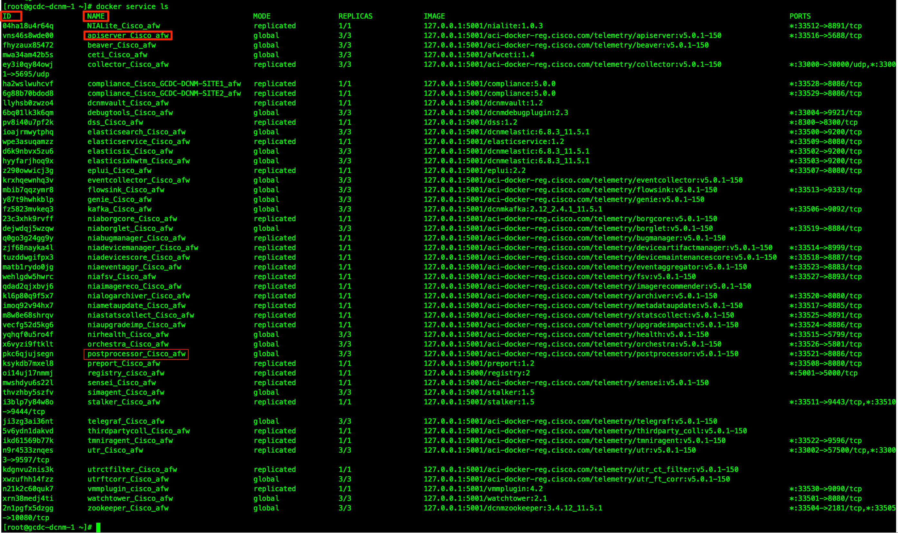
开启Debug tools 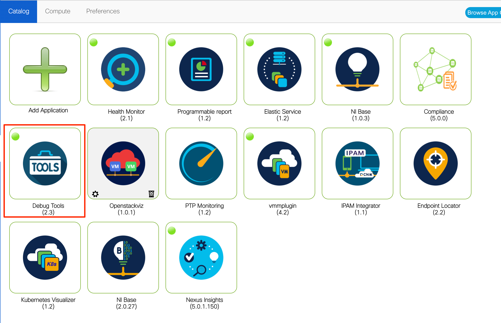
login to DCNM Compute Node
su - //进入 root
docker ps |grep debugtools //确认debug tools容器已开启并取得container id
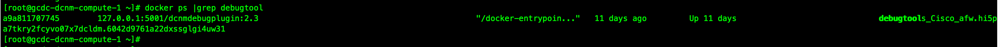
docker exec -it <container id> bash //登录进入debug tools 容器
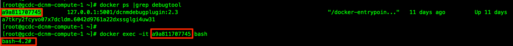
show kafka topics //检查kafka topics
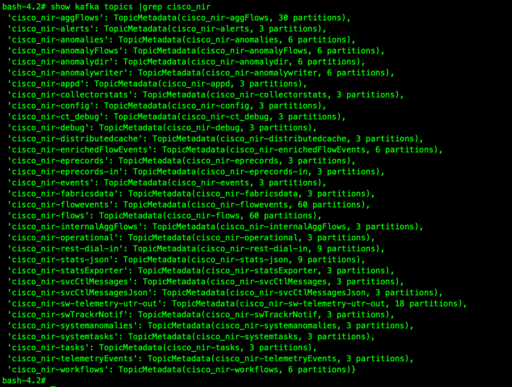
- NI没有接收到任何telemetry data
相关交换机检查命令
show run telemetry
show run analytics
show telemetry transport
show telemetry data collector brief
show telemetry data collector details
show flow system
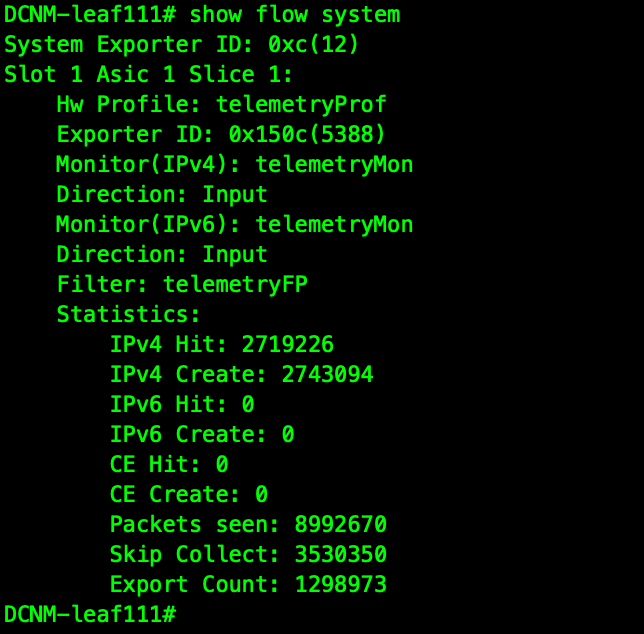
show flow exporter
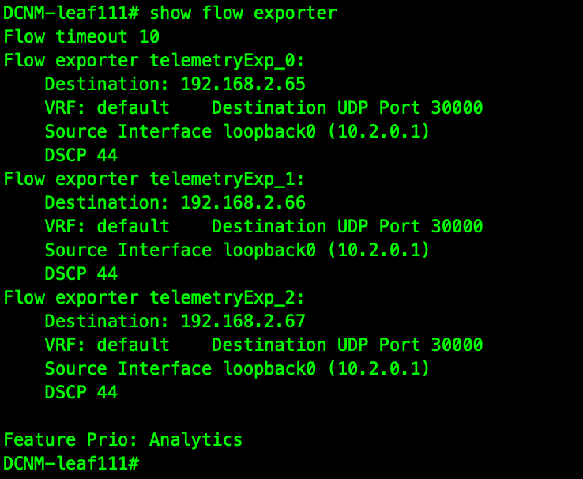
show sys internal access-list input entries detail | b Anal //检查ACL hit次数是否增长
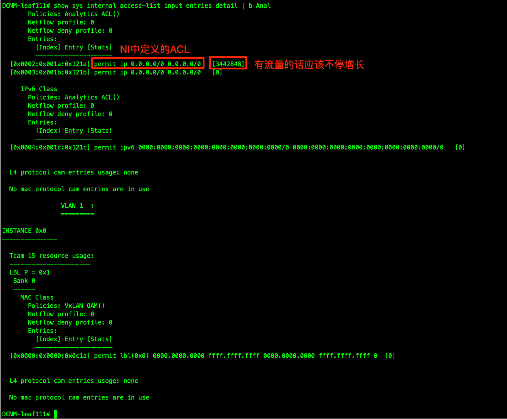
其中show telemetry transport的输出应该显示状态为connected
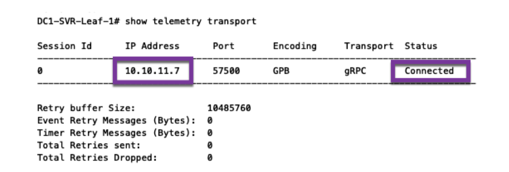
在某些情况下会出现输出为 Transmit Error 的情况，这表示交换机和DCNM的通讯出现问题
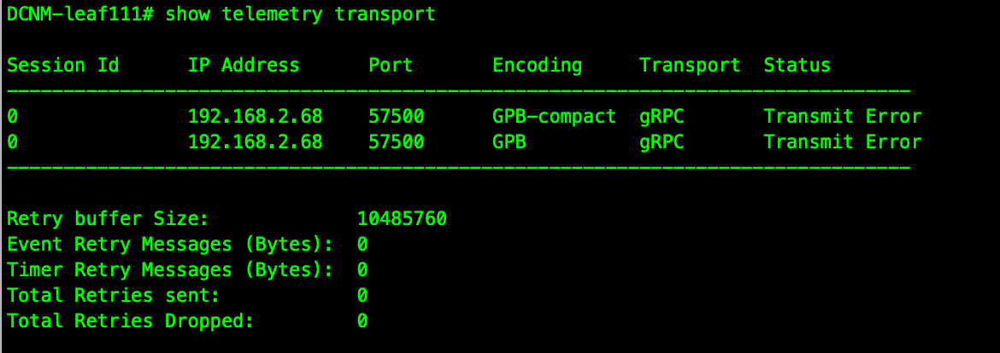
首先检查交换机上的配置，确保Inband接口配置正常，telemetry配置使用了正确的VRF
DCNM-leaf111# show run telemetry
feature telemetry
telemetry
destination-profile
use-vrf default //use VRF
source-interface loopback0 //source interface 为 underlay loopback0
destination-group 500
ip address 192.168.2.68 port 57500 protocol gRPC encoding GPB // NI destination 192.168.2.68
use-chunking size 4096
destination-group 501
ip address 192.168.2.68 port 57500 protocol gRPC encoding GPB-compact // NI destination 192.168.2.68
use-chunking size 4096
根据上面的配置，在交换机上用source interface ping NI destination, 发现不通！！！
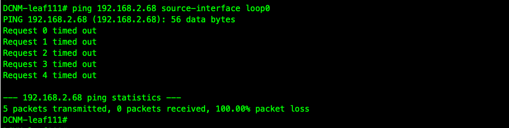
发现交换机的loopback地址在 DCNM 服务器上没有路由，将源地址修改为INB 接口地址，问题解决！
DCNM-leaf111# show run telemetry
feature telemetry
telemetry
destination-profile
use-vrf default //use VRF
source-interface Ethernet1/48 //source interface改为 E1/48
destination-group 500
ip address 192.168.2.68 port 57500 protocol gRPC encoding GPB // NI destination 192.168.2.68
use-chunking size 4096
destination-group 501
ip address 192.168.2.68 port 57500 protocol gRPC encoding GPB-compact // NI destination 192.168.2.68
use-chunking size 4096
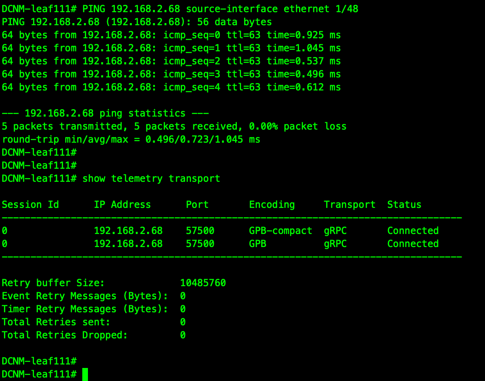
-
NI troubleshooting Tips
- 交换机访问 DCNM TCP port 50051
-
检查telemetry trace error log
show system internal telemetry trace tm-errors -
In DCNM server, 检查telemetry process状态
su - appmgr status pmn-telemetry //Confirm on DCNM if PMN telemetry process is running, if not, start it curl 127.0.0.1 33500 //checking PMN Telemetry process writes monitored data in Elastic Search docker services |grep dcnmelastic //checking elastic search is running
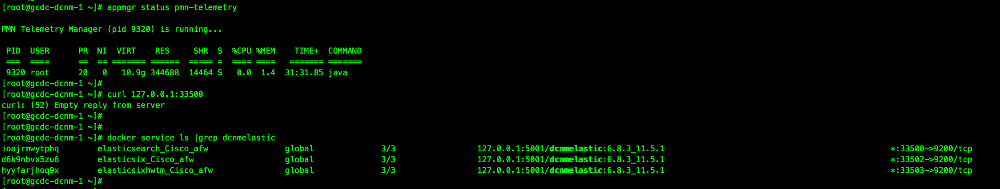